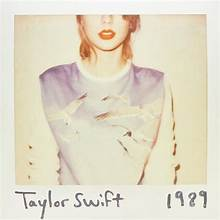

Portada del álbum

Historia
*1989* fue lanzado el 27 de octubre de 2014. Inspirado en la música pop de los años 80, Taylor decidió dejar atrás el country y crear un sonido más moderno. El álbum ganó el Grammy a “Álbum del Año” y vendió millones de copias en todo el mundo. Canciones como Blank Space, Style y Shake It Off se convirtieron en himnos globales.
Video destacado
Curiosidades
- Fue el primer álbum completamente pop de Taylor.
- “Shake It Off” se convirtió en un himno global de confianza.
- La gira de 1989 recaudó más de 250 millones de dólares.
- El título hace referencia al año de nacimiento de Taylor.
Tabla de impacto
| Año | Evento | Impacto |
|---|---|---|
| 2014 | Lanzamiento del álbum | Debut #1 en Billboard |
| 2015 | Grammy a Álbum del Año | Reconocimiento mundial |
| 2016 | 1989 World Tour | Más de 2 millones de asistentes |
Juego en Canvas: Notas musicales 🎵
Haz clic en el lienzo para crear notas musicales
Tabla de canciones
| Número | Canción | Duración |
|---|---|---|
| 1 | Welcome to New York | 3:32 |
| 2 | Blank Space | 3:51 |
| 3 | Style | 3:51 |
| 4 | Shake It Off | 3:39 |
| 5 | Wildest Dreams | 3:40 |
Listas variadas
Lista ordenada de premios
- Grammy al Álbum del Año
- Billboard Top 200 #1
- MTV Video Music Award por “Blank Space”
Lista no ordenada de temas del álbum
- Reinvención
- Pop moderno
- Autoconfianza
- Estilo visual
Lista de definición
- 1989
- El año de nacimiento de Taylor y el título del álbum que simboliza su nueva era.
Formulario interactivo
Enlaces útiles
Sitio oficial de Taylor Swift
Canal oficial de YouTube
Twitter
GitHub
Descargar PDF informativo
Opciones extra
Ctrl + S para guardar tu opinión.
Error 1989: nostalgia detectada
Variable x = año de lanzamiento.
Shake It Off — canción que marcó el cambio de estilo.
“Cause darling I'm a nightmare dressed like a daydream.”